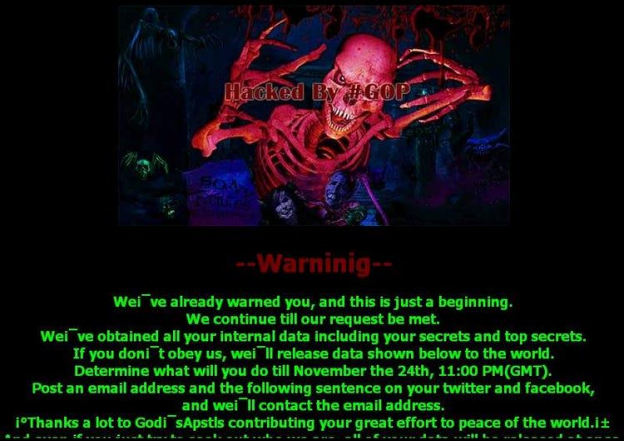

Дефейсинг
Дефейсинг это ...
От англdeface — уродовать, искажать
Тип хакерской атаки, при которой главная (или другая важная) страница сайта заменяется на другую. Обычно новая страница вызывающего вида (реклама, предупреждение, угроза, интернет-мем…).
Чаще всего доступ к остальной части сайта блокируется, или же просто удаляется.
Атака #OpIsrael (2012 – настоящее время)
Эти атаки направленны против израильских сайтов и связанны с политическими акциями, поддерживающими Палестину. Группы хактивистов регулярно взламывают израильские ресурсы, оставляя сообщения, осуждающие израильскую политику на палестинских территориях, и часто публикуют ссылки на материалы в поддержку этой темы.
Скриншот

Взлом сайта Sony Pictures (2014 год)
В 2014 году группа хакеров, известная как Guardians of Peace, провела один из самых известных взломов и дефейсинга, направленных против Sony Pictures. В результате атаки были украдены и опубликованы внутренние данные компании, а также изменены страницы сайтов компании. Хакеры заявили, что атака связана с выпуском фильма "Интервью", сатирической комедии о Северной Корее, что вызвало огромный международный скандал.
Скриншот
Так же дефейсы без конкретной цели (наверное)
WARNING
Отключи звук)
Ну всё, пака пака